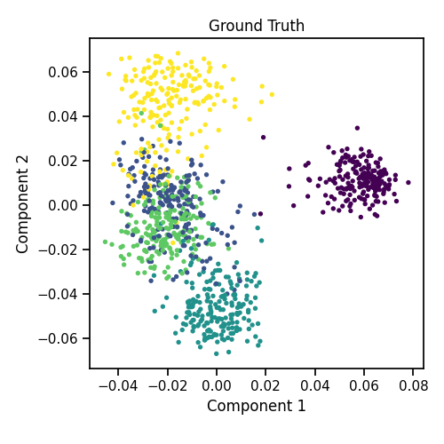
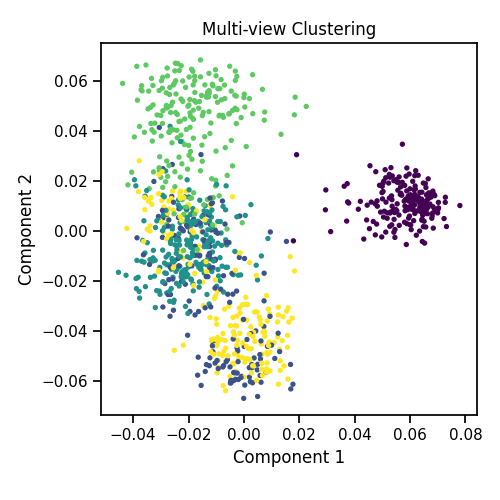

Note
Click here to download the full example code
Multiview Clustering Algorithm to Cluster Data with Multiple Views¶
Here we will compare the performance of the Co-Regularized multiview and singleview spectral clustering. We will evaluate the purity of the resulting clusters from each algorithm with respect to the class labels using the normalized mutual information metric.
As we can see, Co-Regularized multiview clustering produces clusters with higher purity compared to those produced by singleview clustering for all 3 input types.
import warnings
import numpy as np
from sklearn.cluster import SpectralClustering
from sklearn.metrics import normalized_mutual_info_score as nmi_score
from mvlearn.datasets import load_UCImultifeature
from mvlearn.cluster import MultiviewCoRegSpectralClustering
from mvlearn.plotting import quick_visualize
warnings.simplefilter('ignore') # Ignore warnings
RANDOM_SEED = 10
# Load the UCI Digits Multiple Features Data Set as an Example Data Set
# Load dataset along with labels for digits 0 through 4
n_class = 5
Xs, labels = load_UCImultifeature(
select_labeled=list(range(n_class)), views=[0, 1])
Singleview spectral clustering¶
Cluster each view separately and compute nmi
s_spectral = SpectralClustering(
n_clusters=n_class, random_state=RANDOM_SEED, n_init=100)
for i in range(len(Xs)):
s_clusters = s_spectral.fit_predict(Xs[i])
s_nmi = nmi_score(labels, s_clusters, average_method='arithmetic')
print('Single-view View {0:d} NMI Score: {1:.3f}\n'.format(i + 1, s_nmi))
# Concatenate the multiple views into a single view and produce clusters
s_data = np.hstack(Xs)
s_clusters = s_spectral.fit_predict(s_data)
s_nmi = nmi_score(labels, s_clusters)
print('Single-view Concatenated NMI Score: {0:.3f}\n'.format(s_nmi))
Out:
Single-view View 1 NMI Score: 0.620
Single-view View 2 NMI Score: 0.008
Single-view Concatenated NMI Score: 0.008
Co-Regularized multiview spectral clustering¶
Use the MultiviewSpectralClustering instance to cluster the data
m_spectral1 = MultiviewCoRegSpectralClustering(n_clusters=n_class,
random_state=RANDOM_SEED,
n_init=100)
m_clusters1 = m_spectral1.fit_predict(Xs)
# Compute nmi between true class labels and multi-view cluster labels
m_nmi1 = nmi_score(labels, m_clusters1)
print('Multi-view NMI Score: {0:.3f}\n'.format(m_nmi1))
Out:
Multi-view NMI Score: 0.663
Visualize Results¶
Plots of clusters produced by multiview spectral clustering and the true clusters.
We will display the clustering results of the Co-Regularized multiview spectral clustering algorithm below, along with the true class labels.
quick_visualize(Xs, labels=labels, title='Ground Truth',
scatter_kwargs={'s': 8})
quick_visualize(Xs, labels=m_clusters1, title='Multi-view Clustering',
scatter_kwargs={'s': 8})
- 
- 
Total running time of the script: ( 0 minutes 8.079 seconds)